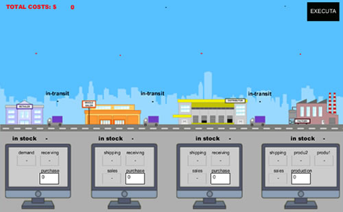
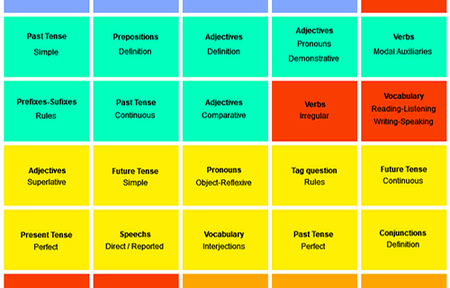
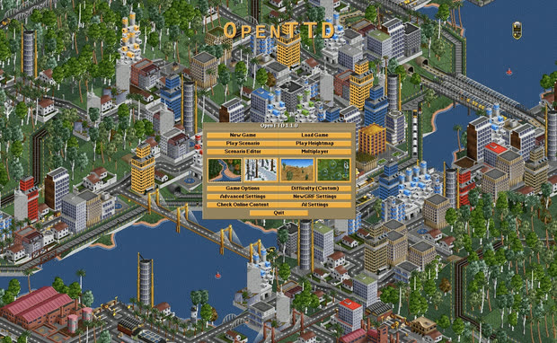

Meu nome é Maikom, atuo na área de logística e cadeia de suprimentos com interesses em tecnologia da informação.
Este é um local onde resumo o histórico profissional, compartilho conteúdos e alguns hobbies.



Sobre temas de logística, cadeia de suprimentos, dados e inteligência artificial.
O critério de seleção foi a simplicidade da explicação, e esse tipo de clareza costuma aparecer mais em vídeos em inglês.
IMPORTANTE: o vídeo só é carregado quando você clica no play. Para assistir em resolução maior, clique depois no símbolo do YouTube.
Six Sigma In 9 MinutesSimplilearn
Fishbone Diagram (Ishikawa): Explained with examplesLEARN & APPLY : Lean and Six Sigma
Scrum vs Kanban: Difference Between Scrum And KanbanSimplilearn
How to Measure Supply Chain PerformanceSkillsoft
Value chain explainedInternational Labour Organization
5 Key Metrics for Last-mile LogisticsAbivin
What Is The Bullwhip Effect: Demand AmplificationLeanVlog
What is Just-In-Time Inventory? JIT ExplainedRacklify
Incoterms Explained: EXW, FOB, CIF, DDP and MoreFinDucation
What Is Data Analytics? An IntroductionCareerFoundry
Database Tutorial for BeginnersLucid Software
SQL Explained in 100 SecondsFireship
What is ETL (Extract, Transform, Load)?IBM Technology
Database vs Data Warehouse vs Data LakeAlex The Analyst
Big DataTED-Ed
Telling Stories with Data in 3 StepsHarvard Business Review
Power BI Explained In 5 MinutesSimplilearn
Data Governance Explained in 5 MinutesIBM Technology
What Is Artificial Intelligence? Crash Course AI #1CrashCourse
AI, Machine Learning, Deep Learning and Generative AI ExplainedIBM Technology
Machine Learning Explained in 100 SecondsFireship
But what is a neural network?3Blue1Brown
Large Language Models explained briefly3Blue1Brown
Why Large Language Models HallucinateIBM Technology
What is Retrieval-Augmented Generation (RAG)?IBM Technology
AI Agents, Clearly ExplainedJeff Su
AI in supply chain and logistics10 Min For Supply Chain